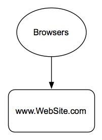
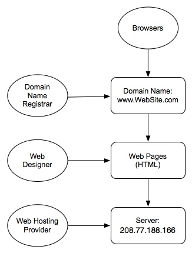
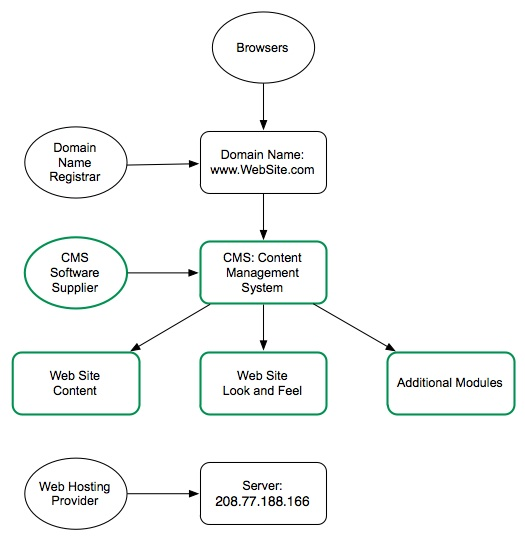
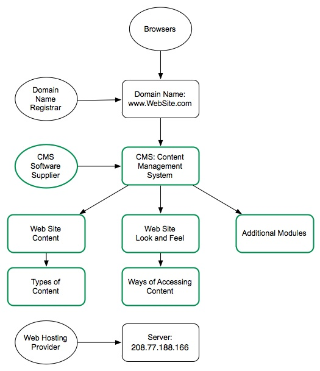

and sometimes downright fishy
thoughts on Technology and Leadership
by Herb Bowie
Anatomy of a Web Site
Many small businesses, non-profits and organizational users have a fairly simple mental model of what a Web site consists of. If they were to visualize it, such a model might look something like this.

While this model is sufficient for read-only users, it is probably overly simplistic for those interested in having a site built for them. In this case, we should at least consider the following.

A Domain Name Registrar is the organization that registers, maintains and redirects the primary address for a Web site. Taking a site that I maintain as an example, www.ReasonToRock.com, the domain name is ReasonToRock.com, and directNIC is the registrar. The services offered by registrars are fairly standardized. Domain name owners generally pay a fairly modest ($5 - $20) annual fee to their registrars for each of their domain names. While the process for transferring a domain name from one registrar to another involves several steps (in order to ensure that it is not being done fraudulently), domain names are in fact portable, and there is no requirement to leave one with whatever organization happened to perform the original registration.
A Web Developer is the person who actually creates the Web pages that will make up the site. HTML (HyperText Markup Language) is the language spoken by Web browsers, and all sites ultimately consist of a series of Web pages expressed in HTML.
A Web Hosting Provider is the organization that provides the Web servers and disk space on which a Web site resides, as well as the Internet connectivity that makes a site available to the the World Wide Web. Large sites with lots of traffic will want to have dedicated hosting, but smaller, less active sites can usually get by with shared hosting, meaning that your site is only one of many residing on a particular piece of server hardware. For example, ReasonToRock.com is currently hosted by Joyent, using one of their shared hosting plans. Shared hosting can cost as little as $100 per year. A hosting provider provides an IP (Internet Protocol) address that is the actual network address at which your site can be found. While moving a site from one hosting provider to another is a little more complex than moving a domain name, it is still very possible, and there is no reason to feel that you are stuck with a particular provider.
Note that there are relatively few domain name registrars around, because they all have to be accredited through an international system. Web hosting providers are more common, but still somewhat limited, since they must purchase the necessary server hardware and software and Internet connectivity to perform hosting. Web developers are the most common of the three classes of providers, and vary significantly in terms of their knowledge, experience and cost.
Note also that this second model is sufficient for building a brochure site. For many other types of sites, though, we would need to consider the following.

A Content Management System (CMS) is a software package that stores a site’s content in a database, and then generates HTML pages dynamically, as requested. The CMS and its database are maintained on the Web Hosting Provider’s server, and such providers often make it easy to install such a software package. A CMS is more complex than a simple set of static Web pages, but offers some significant advantages:
Content can be easily added, updated and deleted by anyone who has been given the proper authority, without the need to purchase any special software or learn any special language.
The site’s look and feel can be easily changed by a knowledgeable Web designer, or even by an administrator using pre-existing themes, without any need to mess about with the content.
Additional modules can often be added to the base system, extending the functionality offered by the core software package.
Drupal is a popular example of a Content Management System. Such a system is appropriate for a much wider range of types of sites — such as blogs, community building sites and information resource sites — than is a Web site consisting only of static pages.
Note that a wiki is a particular type of content management system.
And, to extend our last model just a little bit further, we offer the following.

A sophisticated CMS such as Drupal allows a Web designer to identify particular types of content (such as individuals and events), as well as particular ways of accessing content (such as an address book or a calendar).
So there you have it! If you’re in the market for a Web site for your business or organization, then an understanding of the various possible suppliers and the roles they play can help you make smarter decisions that will lead to a site that will better serve you not only on the day of the launch, but for years after.
May 30, 2011